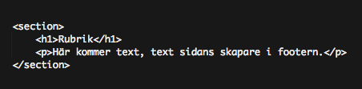
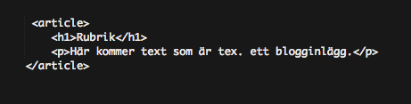
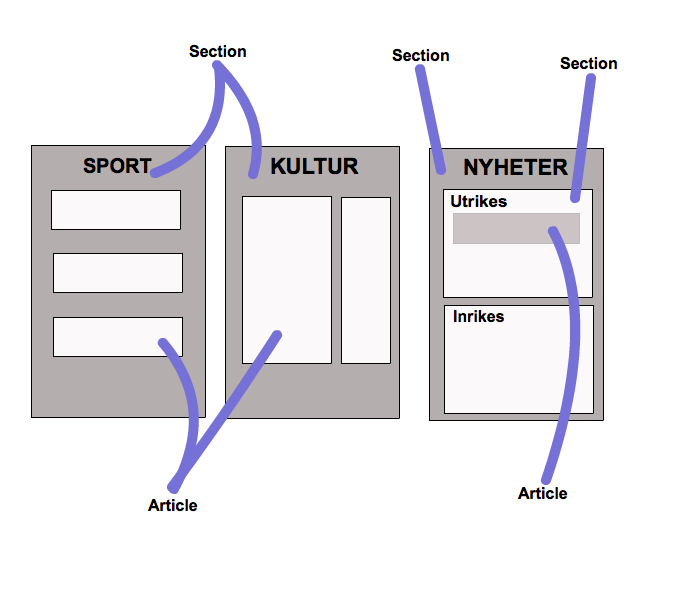

Webbprojekt
Skillnaden mellan article och section-taggarna i HTML5.
Av Elina Gobena
Agenda
- Frågeställning
- Semantiska taggar
- section-taggen
- article-taggen
- "Tidningsregeln"
- Sammanfattning
Frågeställning
Vad är skillnaden i att använda article-taggen mot section-taggen?
Semantiska taggar
- section och article är semantiska taggar, vilket innebär att det tydligt framgår hos webbläsare och utvecklare vad taggarna har för mening.
- div-taggen är inte en semantisk tagg eftersom den inte säger något om innehållet.
section-taggen
- section-taggen används för att skapa ett block.
- Eftersom section är ett semantiskt element, ska innehållet vara relaterat (handla om samma sak).

- Har man en rubrik-tagg behöver egentligen inte en section-tagg användas.
- Texten i section ska vara en generisk överskrift för vad sektionen handlar om.
- En section kan innehålla flera article-taggar, som då fungerar som kategorier till sections innehåll.
- Ex. i en tidnings sportsektion skulle vi då få article-kategorier som "fotboll", "basket" etc.
article-taggen
- article-taggen används för att skapa tex. blogginlägg eller nyhetsartiklar.
- Innehåll i article-taggar kan skrivas ut eller publiceras någon annanstans.

- article kan användas för blogginlägg, men också för statiska delar av en sida, som "om oss"-sidor.
- article-taggar kan innehålla en egen header eller footer.
- article-taggar kan innehålla sections, som fungerar som kapitel inom artikeln.
- Ex. i en tidnings sportsektion, där artikeln handlar om fotboll, skulle vi då få sektioner som tex. "damfotboll", "herrfotboll", "juniorfotboll"
.
Hur kan vi komma ihåg skillnaden mellan article och section?

- article är alltså en specifik typ av section, och dessa två används ihop för att organisera innehållet på en sida.
- Tänk till och krångla inte ihop det.
Sammanfattning
- section-taggen används för block som har liknanade innehåll.
- article-taggen används för "content", alltså innehåll som blogginlägg.
- article och section kan nästlas, men inte för mycket eftersom det blir svårt att reda ut hur allt hänger ihop.
- Viktigt att fundera på hur man vill ha sitt innehåll!
Tack för att ni lyssnade!